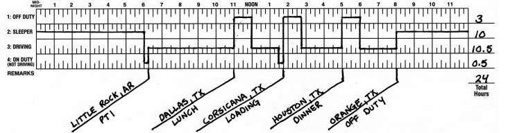

Головна
Робочий графік
Інформація
Правила
Словник
Логін та пароль для оновлення MasterELD
Логін і пароль для Google акаунту на планшетах водіївПароль для планшетів водіїв
PIN код для встановлення програм і налаштування планшетів водіївЛогбук
Зразок правильного заповнення Логбуку Адреси
Адреси головного офісу і паркінгу| Паркінг (Ярд) | Головний офіс |
|---|---|
| Indian Head Park, IL - Yard | Bensenville, IL - Office |
| Прихований текст | Прихований текст |
Водії, що працюють в парі
Team drivers| Водій | Напарник |
|---|---|
| Edmond Salihu | Male Veliu |
| Shetim Berista | Ismet Gjikoli |
Загальні правила
Правила поведінки з водіями та редагування логбуків- Правила спілкування з водіями:
-
Якщо у вас черга - ви не відповідаєте на дзвінок та повідомляєте водію в чаті наступне:
Вибачте, я зараз не можу відповісти на Ваш дзвінок, оскільки маю інших водіїв. Якщо Ви хочете виправити помилки, то прошу вислати паперовий Логбук сюди в чат.
-
Якщо у вас є час - ви приймаєте дзвінок і якщо водій чітко та зрозуміло формулює вам, що саме він хоче виправити, то ви сприяєте йому в цьому. Якщо ви не розумієте водія, то просите намалювати паперовий Логбук, а в чаті пишите наступне:
Пане ______ під час нашої розмови по телефону я не зрозумів, що саме Ви хочете виправити. Надішліть паперовий Логбук зі змінами.
-
Якщо водій телефонує до вас та починає розмову про ваше особисте життя, заробіток чи інші теми, що не стосуються роботи – просто завершіть розмову, а про інцидент повідомте безпосередньо свого менеджера. Не дозволяється з’ясування конфлікту в чаті. Це призводить лише до його загострення.
-
З водіями спілкуйтеся ввічливо і по темі. Пам’ятайте - панібрацтво може призвести до непередбачуваних наслідків.
-
Якщо виникає конфліктна ситуація, то не вступайте в діалог з водієм. Пишіть, що ви виконуєте вказівки менеджерів. Якщо водій незадоволений нашою роботою, то просіть його пояснити суть проблеми менеджерам (Славіку чи Тарасові).
- Правила редагування Логбуків:
-
General rules. Загальні правила:
-
14 hr. Загальний час роботи водія (D + ON) НЕ повинен перевищувати 14 годин за зміну.
-
11 hr. Загальний час водіння (D) НЕ повинен перевищувати 11 годин за зміну.
-
8hr. Безперервний час роботи водія (D + ON) НЕ повинен перевищувати 8 годин підряд.
-
30 min. Після кожних 8 годин безперервної роботи (D + ON) водій повинен робити перерву (Break) не менше 30 години.
-
15 min. Рекомендована тривалість PTI і Fuel 15 хв. Проте час On duty вказує водій.
-
Shift. Робоча зміна.
-
Відлік 24 годинної (Добової) зміни починається після 10 годин безперервного сну, або з вихідного дня - Off duty. Як тільки водій змінив статус з Off duty чи Sleeping на On duty чи Driving, то з того моменту починається відлік 14 годин нової Добової зміни.
-
Відлік 70 годинної (Тижневої) зміни починається після 34 годин рестарту. Як тільки водій змінив статус з Off duty на On duty чи Driving, то з того моменту починається відлік 70 годин нової Добової зміни.
-
-
-
Log Events. Журнал подій:
Текст приховано, щоб прочитати його натисніть кнопку!
Словник термінів
Терміни для запису в нотатки| US English | Солов'їна українська |
|---|---|
| Break | Перерва |
| Bobtail | Трак без причепа (трейлера) - сам тягач |
| Rest | Відпочинок |
| D or Driving | Рух |
| Delivery | Доставка |
| DOT Police Inspection | Поліцейська інспекція |
| DOT permit | Дозвіл на проїзд штатом |
| Drop and hook | Зміна причепу |
| Food / Dinner | Їжа / Вечеря |
| Fuel | Заправка |
| Hook up, Hook, Hook up trailer | Зчеплення |
| Load, Pick up, Pick, PU, p/u | Завантаження вантажу |
| Off or Off Duty | Не працює |
| On or On Duty | На роботі |
| PTI | Огляд транспортного засобу |
| Repair / broke down | Ремонт / зламався |
| SB / Sleep / Sleeping / Sleeper Berth | Сон |
| Scale | Зважування |
| Unhook | Відчепив трейлер |
| Unload | Вивантаження |
| Drop off | Скинув трейлер |
| DOT permit | Дозвіл на проїзд по штаті |
Словник виразів
Фрази для спілкування з водіями| US English | Солов'їна українська |
|---|---|
| Please accept and check | Будь ласка, прийміть і перевірте |
| What’s your truck / trailer number? | Який номер вашого траку / трейлера? |
| Have a good day | Гарного дня! |
| Have a safe trip | Щасливої дороги |
| 20 - 30 mins. A lot of drivers waiting | 20 - 30 хв. Багато водіїв чекає |
| Iam sorry, please accept again | Вибачте, прийміть ще раз |
| Please accept | Прийміть, будь ласка |
| I’am doing now your logbook | Роблю зараз Ваш логбук |
| You have HOS violation!!! You have to stop immediately and send to us corrected paper logbook to fix this issue | У Вас порушення годин праці, зупиніться негайно і відправте нам виправлені паперові лог буки |
| Сan you please go to Off duty(sleep,on duty) now | Станьте будь-ласка на Off duty |
| Looks like you don’t have good internet connection on your tablet | Схоже, що у вас відсутній/поганий інтернет на планшеті |
| Please update(reinstall) your MasterELD app | Оновіть(перевстановіть) ваш додоток MasterELD |
| *Імя драйвера* , you have to pull over somewhere ASAP and accept changes. You CAN’T drive with pending requests!!! | Ти мусиш зупинитися якнайшвидше і прийняти зміни. Ти можеш їздити зі змінами, які очікують прийняття! |
| HOS (Hours of service) | Години праці |
| You must follow with company rules! | Ви мусите дотримуватися правил компані! |
| It’s your responsibility to keep your logs current and legal | Це ваш обов’язок тримати лог бук чинним |
| We CAN’T do any changes in your log, while you driving | Ми не можемо робити зміни у логбуці поки ви їдете |
| Please fill out all statuses correctly in your paper log (PTI, break, delivery etc)! | Будь - ласка заповнюйте всі ваші статуси в паперовому лог буці (PTI, перерва, доставка і тд) |
| example | приклад |
| Sorry, I have to cancel new changes in your log book ! | Вибачте, але я мушу відмінити оновлення |
| DOT permit | Дозвіл на проїзд по штаті |